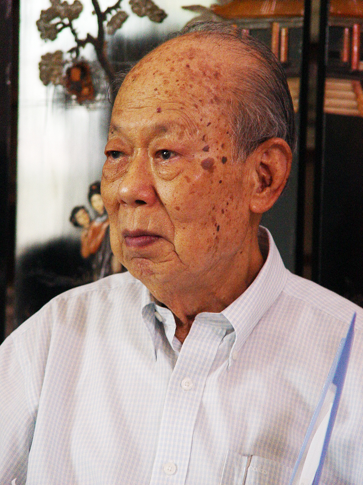
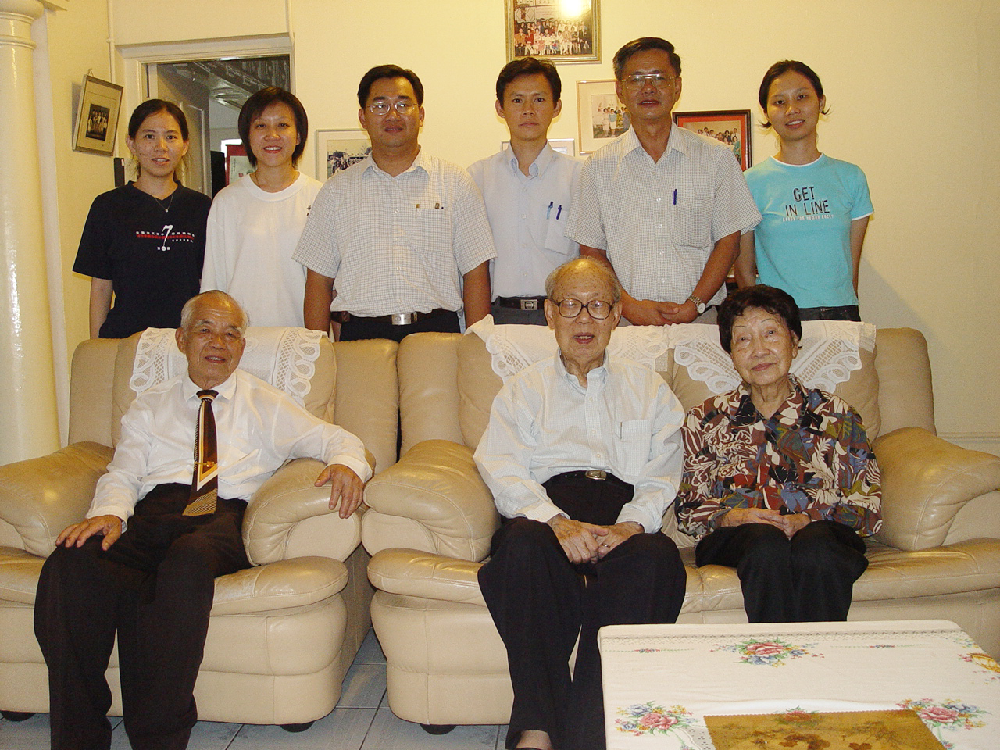
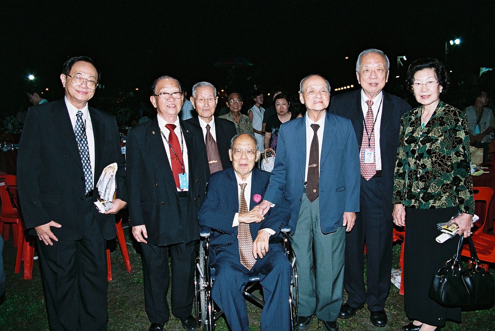

叶鸿恩主席 愚公移山矢志不渝
河曲智叟笑而止之曰：“甚矣，汝之不惠以残年余力，曾不能毁山之一毛，其如土石何？”北山愚公长息曰：“汝心之固，固不可彻，曾不若孀妻弱子。虽我之死，有子存焉；子又生孙，孙又生子；子又有子，子又有孙；子子孙孙无穷匮也，而山不加增，何苦而不平？”河曲智叟亡以应。《列子·汤问》
“……近年来，叶先生力疾从公，扶杖而行，还是不离不弃，实践了‘愚公移山’的精神。从独立大学到新纪元学院，他无役不与，鞠躬尽瘁，实为典范。‘惠安精神’当之无愧。”陆庭谕<“惠安精神”与叶鸿恩先生>
2021年第117期《华教导报》开始连载华教人物口述历史节选篇章。虽是节选，但是整理者确实耗费心思，希望做到不负当初采访与策划的一片初心，更不愧对受访的华教先贤对口述历史团队的信任。所采集的录影和录音记录，先整理成逐字稿，再参照专访时搜集的照片、日记、文件记录等，配合史料的记载，将华教人物的亲身经历以文字方式呈现。这些“追述者的心声”，填补了没有文字记载的空白，未必完整，但至少，留下口述者的亲口表述，让冷冰冰的书面历史，变得有温度而生动。
董总口述历史团队于2004年3月4日初访当时88岁高龄的董总前主席叶鸿恩先生，为了让受访者可以更从容及获得信赖，特别邀请了叶鸿恩主席的战友陆庭谕老师陪同采访。短短1小时半的时间，与其说是采访，其实更像是与长辈的温馨闲聊。口述历史团队过后拟定计划，将叶鸿恩主席列为2005年的重点采访人物。非常遗憾的是，叶鸿恩主席在口述历史团队于2005年5月13日带领画家谢惠载为他作画后不久就与世长辞了。那短暂的1小时半的采访，就更显得珍贵了。
生平简述
叶鸿恩主席原名叶省三，1916年生于中国福建惠安，幼年时随父迁居厦门，在厦门长大和受教育，1937年毕业于厦门大学法律系。大学时期，他积极参与学生活动，曾任厦门大学法律学会会长、青年团主席，大学毕业后他任职厦门闽南职业中学校长。叶鸿恩非常敬佩厦门大学创办人陈嘉庚的办学精神，也受陈嘉庚忧国忧民的伟大精神感召，对教育事业有一股执拗的坚持，一生为教育而奔波。
叶鸿恩主席于1939年厦门遭日军攻陷后南来马来亚吉隆坡。他先在雪兰莪福建会馆属下的国民学校短暂任教，然后去了槟城三民学校担任校长。1946年，他和几位友人创办吉隆坡中国公学，吸纳战时失学的超龄学生。1949年，叶鸿恩主席接受太平华联中小学董事部邀请出任校长一职。
1950年代初期，他放下教鞭，转投商界发展，从事建筑业，改名“鸿恩”，除致力于教会侍奉外，对教育也很有热诚。他对本身所创办的中国公学投入许多心力。自1946年开始，他担任中国公学董事，并于1963年至1988年期间出任董事长长达26年。与此同时，他也坚守捍卫华小本质的立场。在教育部1985年综合学校计划下，中国公学被选定为试行华小，但遭以他为首的董事会坚决反对。
此外，叶鸿恩主席也曾担任北霹雳华校教师公会会长和霹雳华校教师公会副会长。1951年8月24日，他以霹雳州代表身份出席“全马华校教师会代表大会”，并参与筹组“华校教师总会”工作。1958年至1978年，他担任雪隆华校董联会理事，包括出任正副主席职，并于1967年至1968年期间担任董总主席。在任期间，他极力捍卫董事会主权，尤其是在1969年《阿兹报告书》提出废除学校董事会一事，参与董教总代表团与政府当局的对话，表明了坚决反对废除学校董事会，并力争保留学校董事会的立场。
不难想象，叶鸿恩主席在捍卫华教权益和筹办独立大学方面，面对来自政治的干扰和压力时有多艰难，但他不曾离队，即使在卸下董总领导重任后，也继续参与各项华教活动。到了晚年，即使年事已高，行动不便，他仍然靠轮椅或拄着拐杖出席各种重要场合，关心华教的心始终如一。2005年7月9日，叶鸿恩主席离世，60余年为华教无私奉献，鞠躬尽瘁的精神，实为后辈典范。
以下节选口述历史团队于2004年3月4日初访叶鸿恩的口述内容：
董总资料与档案局口述历史工作团队于2004年3月4日初访叶鸿恩主席。领导董总，倡办独大
叶鸿恩主席曾是董总第六届（1967年至1968年）常务委员会主席，总务是宋万荣先生、财政则是吴桂庭先生。当时的华文教育经历了1960年代初华文中学改制的惨痛时期。1967年9月21日，教育部长佐哈励宣布从1968年开始，唯拥有剑桥文凭或马来西亚教育文凭的学生才能出国升学，使华文独中毕业生升学无门的劫难，令华社忧心忡忡。1967年12月7日，高师职总主席陆庭谕在高师职总会议上提出创办一所华文大学的建议。此号召获得教总和董总的响应，自此掀开了长达近15年的独立大学运动的序幕。叶鸿恩主席作为董总主席，自是不遗余力地投入在申办独立大学的事务中。1968年4月14日，独大发起人大会通过成立“独立大学筹委会”，他被推选为主席，负起领导筹办独大的重任。在非常艰辛及阻难重重的情境下，他非但没有退缩，反而说：“筹办独大任重道远，必经崎岖艰难路程，大家要有愚公移山百折不挠的精神。”
发起人大会后，筹委会在申请独大有限公司注册的同时，也迅速在全国各地组织独大筹委会分会，紧接着掀起了独大筹款运动的热潮。独立大学有限公司的注册在1969年大选前夕获得批准，却不料随后发生了“五一三事件”，国家进入紧急状态，独大的筹办活动被迫暂停。直到1974年，局势逐渐明朗，独立大学有限公司于6月16日召开第一届会员大会，选出第一届理事会成员。当时的董总主席林晃昇被选为第一届独大理事会主席，而年届58岁的叶鸿恩主席担任理事一职。申办独大的路崎岖难行，官方一再强调独大的申办是不被允许的。然而，华社并没有因此而气馁，反而更加激起了斗志，推动全国华团签名盖章请愿运动，请求最高元首恩准创办独大。
创办独大的愿望到底还是破灭了。1979年2月2日，独大主席收到最高元首拒绝独大申请的复函，独大理事会于是在1980年9月16日正式入禀吉隆坡高庭起诉政府，惟随后败诉。1982年7月6日，联邦法院又以4比1票驳回上诉，并于7月9日批准律政司申请，宣判独大案涉及宪法问题，不准上诉至英国枢密院。从倡议创办独大、申办被拒、请愿、筹款、起诉政府到最后败诉，这一段艰辛的过程，叶鸿恩主席从站在最前线到后期的默默支持与陪伴，始终不曾离场。
主持人：能否说说您担任董总主席的一些心路历程？
叶鸿恩：我起初来是参加这个雪兰莪华校联合会……当时我是一个理事，没有多大的活动。那个时候的主席是陈济谋……好像是雪兰莪联合会的主席，就是董总的主席，常常就是这样。不过那个时候董总呢，有参加的呢，我们当然是，全马来亚各董事联合会来参加，但是不大理想，有的还没组织，有的组织了，比较远一点点，他们也很少来开会，不过组织是有，那个时候没有发挥多少力量……我们希望全马来亚各董事联合会能够来参加，但结果就是因为一些地理上的关系啦，有的就说还没有组织好啦，所以参加的都比较少，都是主要的几个地方，所以不能够发挥这个很大的效能。不过组织是有，同时工作也有。
当时其实是这样咯！我们就好像照章程咯，定期开会，有时候有什么事情我们就拿来讨论咯，好像我们对于这个教育问题，劝导华人的子弟来进这个华校。比方说，我们也注意这个国家的事情，我们有时候也提倡我们要用国货，鼓励学生吃本地水果。这样子表示说我们不但是要争取我们华人的教育，同时也关心国家的事情，这个倒引起人家的好感。
主持人：在任职董总主席期间，您曾参与领导独立大学运动，它的发起经过是怎样的？
叶鸿恩：第一呢，因为当时这个教育部，他说要出国留学要拿这个Cambridge九号的文凭，经过英文的考试，是吗？那么这样一来就是说，我们华校没有什么机会去出国留学咯，我们就反对这个咯，反对呢，起初也没什么效果，所以我们就……好，既然是这样，我们办独立大学。独立大学，因为这个纪念本邦这个光荣灿烂的一种独立，所以我们定这间大学的名字为“独立大学”。同时，我们也说，这个大学将来语文是以多种语文，当然是以华文为主啦，不过就是多种语文，最要紧的就是我们要给这个独中的学生有一个升学的管道，同时呢给这个比较穷苦的这个……人士呢有个升学的门。
因为当时我是北霹雳的会的主席，霹雳教师会的副主席，所以我参加这个大会嘛，这个章程还是我起草的，起草人之一……那么当时我们发函给全国的这个华人团体，请他在某年某日，大概在1968还是……65，总之那个时候在中华大会堂开会，当时出席的也有七百多个人，那么有一百多个团体，那么我们大家就认为一定可以……需要办这个所谓这个……私人学院，一方面我们也是这个华人子弟升学方面，对那些不能够出国留学的，给他们机会。那么，大家非常热烈地说一定要成立，当时就成立一个筹备委员会，人员你们可以参考那个记录。那么以后呢，我们就展开这个工作的活动，因为那个时候很紧张噢，这个各社团响应，义卖、义剪、义踏，跟那时的南洋大学差不多，那么在各方面，这个催促、热诚响应之下呢，那么就决定了进行搬移。所以当时呢，我们第一就是说要找地方咯，办大学要先找地方咯，所以就征求到这个加影八大华团的同意，就拨了块校地，大概有八英亩，送给我们独立大学做校址……
校地一有了，那么大家就热心起来了。所以那个时候呢，我们就利用那个时候的名气效应，向政府注册，申请注册，就是说独立大学的有限公司，本来这个非盈利的公司是管理这个……他们硬硬把我们说是有政治性的，我们说这个没有，我们是办教育的，当时也很困难……就在这个选举的前一个礼拜，我们拿到了……
注册拿到了很有效果，很有用处，将来我们买这个地，因为我们是这个注册的华人团体，所以我们就把这个校地拿到这边来。假如是没有这个公司呢，人家送给你送给谁？送给叶某某吗？送给他吗？送什么教总董总呢？都不是很完善的，所以好在我们有这个注册，这个可以说是天在帮助我们，人民……民意所归。那么以后就买到地咯，我们就用这个公司来活动，当着合法的团体来活动，就和当时的南洋大学一样。南洋大学当时也是非盈利有限公司，不过他拿到那个准证用很大的力量。我们倒是那个时候因为各方面在大选以前，政府就给我们了。以后有地了，有一个合法的……在法律上合法的社团来活动这个事情。不过以后就是五一三的事情，我们这个计划就停顿下来了，不过基础工作可以说是当时做的，有校地，有注册就这种工作。所以在这个我们新纪元学院落成的时候，有人就说，这个新纪元学院就是独立大学的一种化身，其实也是这样，是对的。
主持人：对于独大运动官司的败诉，您有何感想？
叶鸿恩：大家都认为这是种光荣的失败，我们还要再接再厉。我们有一个时期问说，好，不要办大学了，我们办学院，南洋学院，我们花了很多时间做这个申请书、企划书，我们董总组织什么，结果也拖了很久，没有下文，一直到二、三十年之后，这个大概政治的气候变迁，所以才有这个新纪元学院，经过差不多二、三十年了。
主持人：对我们当时四千个社团签名，到最后政府还是给我们败诉，您今天回想起来，您会服气吗？会服这个官司吗？
叶鸿恩：当然不止我咯，那个时候董总的主席已经是林晃昇先生这些人，大家当然是非常失望，不过也知道这个是意料中的事情，不过是要这样来表明我们办大学的决心，我们的原意，是在为教育而教育的，但是有人就说这个是有政治性的。
2004年12月11日董总50年晚宴，叶鸿恩与董教总领导及华教人士合影。兴学办教，热心教育
主持人：除了独大事件以外，还有哪些华教事件是您曾参与其中的？
叶鸿恩：我创办这个中国公小，当时刚刚这个战后，那么很多失学的儿童，于是创办这个中国公小，以后在那个独中的时候，我们从国民型的中学办这个学校，当时当然啦，我的经济力量有限，都是做这个宣传联络的工作，所以当时我们是想我们做事情的人哪，早期的社团，主席都是挂名，比较有钱的人，要你的经济力量还是要你什么，请你做主席……所以我当时做很多的这个总务。
主持人：能不能谈谈当时跟林连玉先生的互动关系？
叶鸿恩：林连玉先生在起初这个……教总成立的时候，他是主席啊，当时我们就好像一起共事，同时我是大会的起草人，大会的代表，他跟我还有同乡关系，他常常到这个逸园公馆去，我住在那边附近，逸园的附近，我也常常去。他不赌钱，我也是不赌钱，在那边谈天咯，呵呵，就是这样。我很尊敬他，非常尊敬他，他这个出殡的时候，我从大会堂一直送……
林连玉先生他的人格，他的学问，他做人的一种态度，实在很难得，他很勇敢。他当时假如想做官呢，很容易哦！
主持人：董总1954年成立、创会，2004年刚好五十年。您对董总的祝福和期望是什么？
董总可以说是做了很多献身华社的工作，维护这个华文教育，可以说是居功至伟，应当是全体华人支持的，我祝他光明的前途，美丽的愿景，那个，全民能够拥护支持这个董总，尤其是现在还有一部分的人，他们对董总还不大认识，所以希望能够各阶层，打进各阶层去。现在当然是中下级的比较多，中上的就比较少，有的说我不关心，有的人就存有意见，不同的意见，不同的看法。所以我们希望以后大家能够一致地支持这个维护民族教育的一种工作，在董总、教总的领导之下。现在算是已经很好了，跟我那个时候的气候完全不同……不过我刚才有说要争取各阶层的人哪，各阶层的人来支持我们的这个工作，现在是中下级的，全民拥护。不过，假如说呢，原则是不能改的，不过在策略方面，技术方面，我们倒要研究……
参考资料：
陆庭瑜、颀洋著，李锦宗编，《原汁原味》，2008年。
《马来西亚福建人兴学办教史料集》，马来西亚福建社团联合会出版，1993年。